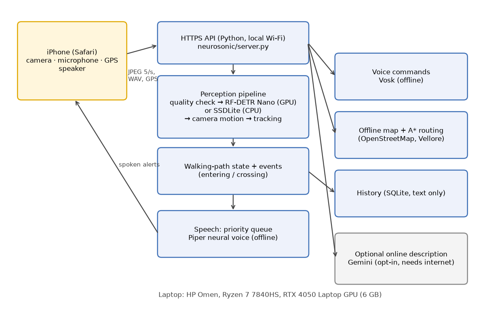
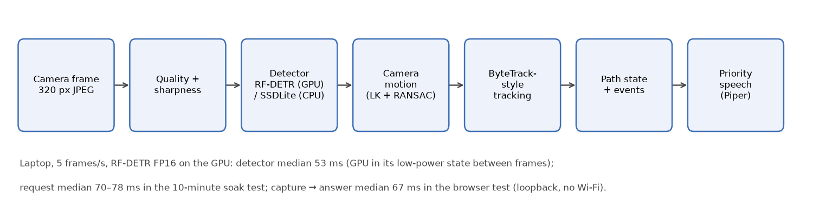
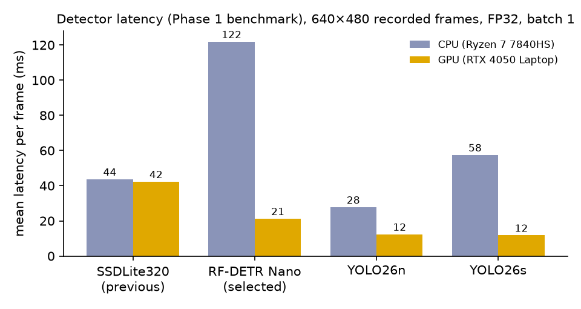
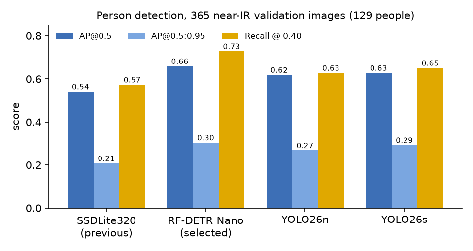
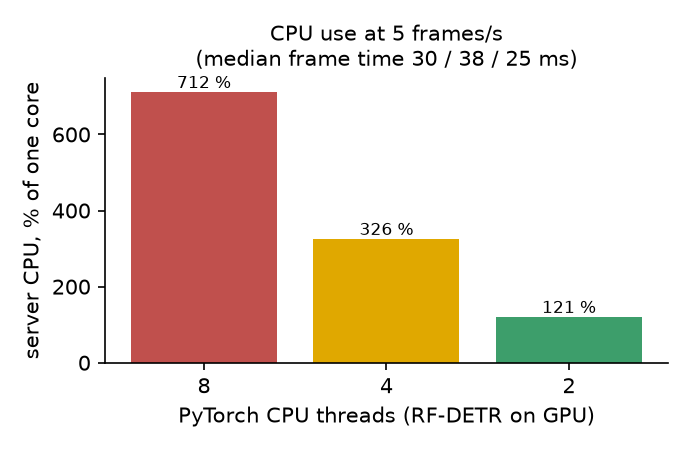
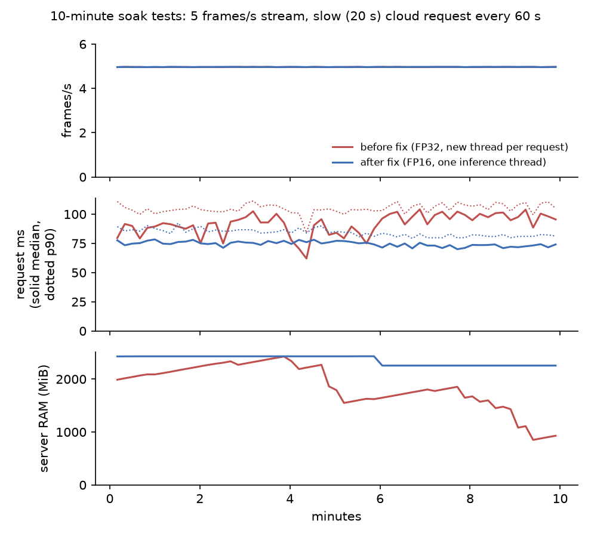
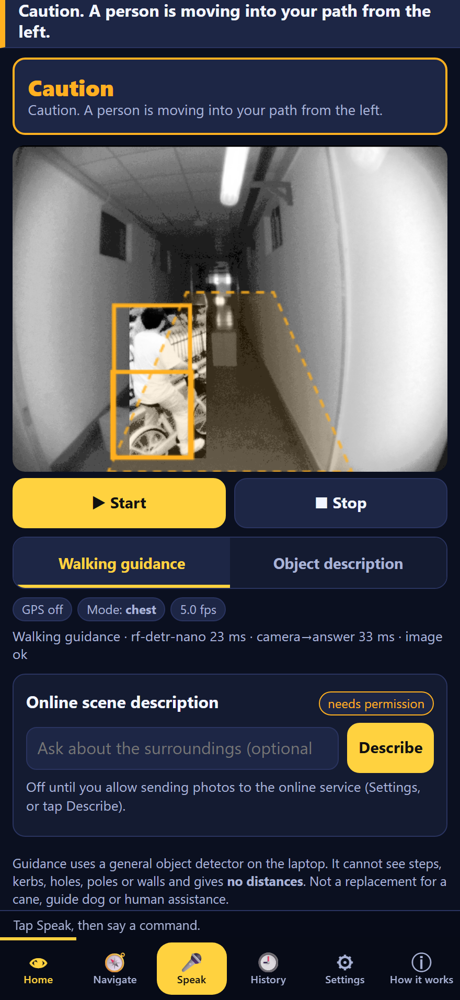
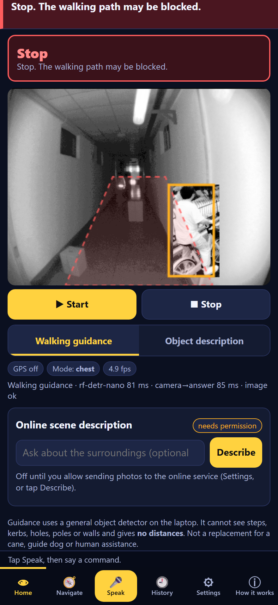
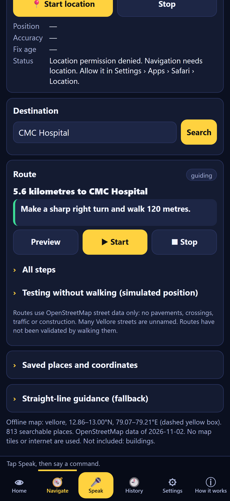

Research prototype report. All results measured on one laptop on 2026-11-02/03 unless stated otherwise.
Manuscript version: 2026-11-03
Abstract. We describe NeuroSonic, a research prototype in which an iPhone acts as the camera, microphone, GPS receiver and speaker of a perception and navigation system that runs on a laptop over local Wi-Fi. The system grew out of WOAD, a near-infrared and depth obstacle detector that needs a sensor the phone does not have. For the phone's RGB camera we benchmarked four detectors under identical conditions on 365 near-infrared validation images containing 129 people. RF-DETR Nano gave the highest person AP@0.5 (0.660; SSDLite 0.542, YOLO26n 0.619, YOLO26s 0.628) and the highest recall at the operating threshold (0.729), with 21.3 ms mean GPU latency on an RTX 4050 Laptop GPU. It runs as the primary detector with an automatic fall-back to SSDLite on the CPU. Detections are tracked with a ByteTrack-style association that compensates for camera motion estimated with pyramidal Lucas–Kanade optical flow and RANSAC. On top of the tracks, two conservative events, "entering the walking path" and "crossing in front", are spoken with an offline neural voice. Offline speech commands, an offline OpenStreetMap router and an optional, opt-in cloud scene description complete the system. In loopback browser tests with a simulated camera, the pipeline sustained about 5 frames/s with a median capture-to-answer time of 67 ms. Three engineering problems were found and corrected: idle PyTorch CPU threads (712 % → 121 % of one core), per-request inference threads, and the GPU power state at low frame rates (partly mitigated with FP16, with unchanged person AP@0.5). A 10-minute soak test ran without errors. NeuroSonic has not been validated with an iPhone in real streets or with visually impaired users. It is not a safety device. We publish a validation protocol for these tests.
Keywords: assistive technology; visual impairment; real-time object detection; RF-DETR; multi-object tracking; camera-motion compensation; offline speech; pedestrian navigation; edge computing.
A pedestrian with a visual impairment needs two kinds of information that a white cane and a map application do not give together: what is in front of me now (people stepping into the way, a bicycle crossing, a chair in a corridor) and where do I turn. Smartphones carry a camera, a microphone, GPS and a speaker. Running modern detectors at several frames per second on the phone itself is difficult in a browser application, and cloud services need a reliable internet connection and send images off the device.
NeuroSonic explores a middle way. The phone is a thin client in Safari. A laptop with a consumer GPU on the same Wi-Fi does the perception, speech recognition, speech synthesis and routing without internet access. The project started from WOAD (Wearable Obstacle Avoidance Device) [1], a two-stream near-infrared and depth model. WOAD requires a CS30 time-of-flight sensor, which no phone has, so the phone camera path had to be built separately. This paper reports how that path was designed and measured, and what remains untested.
The contributions are:
Problem. Provide short, timely spoken information about recognised objects in the walking path and route guidance to a pedestrian holding or wearing a phone, without depending on internet access, without storing camera images, and without overstating what the system can see.
Objectives.
Predecessor. WOAD [1] fuses near-infrared and colour-mapped depth streams with transformer-based cross-modal attention in a YOLO-style detector. In earlier work in this project, we measured its cross-dataset person AP@0.5 at 0.17–0.22. We could not reproduce the authors' reported 0.669 mAP, and the model needs its sensor, so in NeuroSonic it is limited to recorded data.
Real-time detection. Single-stage detectors such as YOLO [2] and SSD [3] made real-time detection practical. SSDLite with a MobileNetV3 backbone [4] targets mobile CPUs. DETR [5] introduced set prediction with transformers and removed non-maximum suppression. RF-DETR [6] is a real-time DETR variant from Roboflow built on a DINOv2 backbone [7] and released under Apache-2.0. YOLO26 [8] is the current Ultralytics family (AGPL-3.0). All detectors used here were trained on COCO [9].
Tracking. SORT [10] associates detections to Kalman-predicted tracks by IoU. ByteTrack [11] also uses low-confidence detections in a second association stage, which keeps tracks alive through occlusion. Our tracker follows ByteTrack's two-stage idea. Instead of a Kalman filter, it uses a camera-motion-compensated prediction.
Camera motion. Sparse optical flow with Shi–Tomasi corners [12] and the Lucas–Kanade method [13] in its pyramidal form [14], followed by a RANSAC [15] fit of a similarity transform, is a standard way to estimate global image motion. We use the OpenCV implementations [16].
Speech and maps. Offline recognition uses Vosk, built on Kaldi [17]. Speech synthesis uses Piper [18], which is based on VITS [19]. Routing uses A* [20] on an OpenStreetMap [21] extract.
We did not carry out a systematic review of assistive-navigation literature for this manuscript. The comparison in this paper is between components we ran ourselves.

The server is a standard-library Python HTTP(S) server. The phone loads a web application (HTML/JavaScript) from it and then:
HTTPS uses a locally generated certificate authority, so that Safari grants camera and microphone access. History is stored in SQLite as text only. No camera image is written to disk or to logs.

Four candidates were run through the same harness (tools/benchmark_detectors.py):
Quality was measured as person average precision with the project's own AP code, on 365 near-infrared validation images containing 129 annotated people, from the WOAD dataset. These are the only locally available images with person boxes. They are not phone RGB images, so they rank the detectors but do not predict street performance. We also report precision and recall at the production confidence threshold of 0.40.
Latency was the mean over 200 (GPU) or 60 (CPU) recorded 640×480 frames, back to back, FP32, batch 1, after 10 warm-up frames.
Licence was a selection criterion, because the system is a network service: AGPL-3.0 would oblige release of the source to users.
RF-DETR runs on CUDA from local weights. Downloads are blocked at run time. Its detections are restricted to 23 obstacle-relevant COCO classes at confidence ≥ 0.40. A wrapper falls back to SSDLite on the CPU in these cases:
Three serving changes were made after measurement (section 7.3):
Camera motion. Up to 150 Shi–Tomasi corners are taken outside the detected boxes and followed into the next frame with pyramidal Lucas–Kanade flow. A similarity transform (shift, scale, rotation) is fitted with RANSAC. If there are fewer than 12 corners or inliers, the camera motion is "unknown".
Tracking. Each track's box is predicted by applying the camera transform to its last box.
Walking path. The walking path is a lower-central trapezoid of the image. Its state is one of CLEAR_VIEW, POSSIBLE_OBSTACLE, BLOCKED_VIEW, UNCERTAIN (dark or blurred frame) or CAMERA_UNAVAILABLE. A state is confirmed by 2-of-3 or 3-of-3 consecutive frames before it is spoken.
Event preconditions. Events are only considered for confirmed tracks: at least three updates over at least 0.4 s, of people, vehicles or animals.
Event rules.
Suppression.
"Approaching" was deliberately not implemented. With a moving camera, box growth is dominated by the user's own walking. No message states a distance or that the way is safe.
| Item | Value |
|---|---|
| Laptop | HP Omen; AMD Ryzen 7 7840HS (8 cores / 16 threads); 15.3 GB RAM; NVIDIA GeForce RTX 4050 Laptop GPU, 6 GB; driver 592.82 |
| Software | Windows 11; Python 3.12.10; PyTorch 2.15.0+cu132; torchvision 0.29.1; rfdetr 1.11.2; OpenCV; Piper 1.8.0; Vosk |
| Environments | .venv (CPU-only, original); .venv-gpu (CUDA, used for the GPU results) |
| Detector quality data | 365 near-infrared validation images, 129 people (WOAD dataset) |
| Live-pipeline input | a 640×480 clip that composites a real recorded person riding a bicycle over a real recorded empty
corridor (tools/make_event_clip.py), played as Chrome's fake camera, or streamed by tools/soak_test.py |
| Browser tests | headless Chrome, iPhone-sized viewport, fake camera and microphone, DNS blocked; server on loopback |
No measurement in this paper includes Wi-Fi transmission, iPhone JPEG encoding, real street scenes or users.
| Detector | GPU ms | CPU ms | AP@0.5 | AP@0.5:0.95 | Precision @0.40 | Recall @0.40 | Licence |
|---|---|---|---|---|---|---|---|
| SSDLite320 (previous) | 42.3 | 43.7 | 0.542 | 0.208 | 0.607 | 0.574 | BSD-3 |
| RF-DETR Nano (selected) | 21.3 | 121.9 | 0.660 | 0.304 | 0.588 | 0.729 | Apache-2.0 |
| YOLO26n | 12.4 | 27.8 | 0.619 | 0.268 | 0.633 | 0.628 | AGPL-3.0 |
| YOLO26s | 11.8 | 57.5 | 0.628 | 0.292 | 0.600 | 0.651 | AGPL-3.0 |


Choice of RF-DETR Nano. It had the best AP and recall. Recall matters most for a warning system, because a missed person is worse than an extra caution. Its 21 ms GPU latency fits a 200 ms frame interval, and its licence is permissive.
Trade-offs. The YOLO26 models are faster, but they rank lower on recall and are AGPL-3.0. RF-DETR is too slow on the CPU (122 ms), so SSDLite remains the fall-back. RF-DETR's precision at 0.40 (0.588) is slightly lower than the others', so more false detections are expected. The temporal confirmation in sections 5.3–5.4 is meant to absorb them.
RF-DETR was run in FP32 and in FP16 (half precision, no graph compilation) with the same weights and code path (tools/benchmark_precision.py, outputs/benchmarks/precision/results.json). Person quality is unchanged. Back to back, both take about 17 ms per 320×240 frame. At the application's rate of 5 frames/s, where the GPU drops to its P8 power state between frames (sampled clocks 210–405 MHz), FP16 lowers the median from 66.5 to 53.2 ms and the p90 from 78.6 to 60.8 ms. On the event clip, FP32 and FP16 gave the same class counts. FP16 is therefore the default, with FP32 as automatic fall-back.
| Precision | AP@0.5 | AP@0.5:0.95 | Precision @0.40 | Recall @0.40 | Back-to-back median / p90 ms | At 5 frames/s median / p90 ms |
|---|---|---|---|---|---|---|
| FP32 | 0.660 | 0.304 | 0.588 | 0.729 | 17.3 / 21.7 | 66.5 / 78.6 |
| FP16 (used) | 0.660 | 0.305 | 0.595 | 0.729 | 16.9 / 20.4 | 53.2 / 60.8 |
CPU threads. With RF-DETR on the GPU, PyTorch's default CPU thread pool (8 threads) kept the server at 712 % of one CPU core while streaming 5 frames/s, although the GPU did the detection. Two threads cut this to 121 % with no loss of frame rate (Figure 5). Median frame time was 30, 38 and 25 ms for 8, 4 and 2 threads.

GPU power state. At 5 frames/s the GPU is idle about 90 % of the time. In repeated in-process timings, the RTX 4050 then dropped to its lowest performance state (P8, about 390 MHz). The same RF-DETR inference took about 16 ms at P5 (≈600 MHz) and about 74 ms at P8. This explains why per-frame latency in the live pipeline is several times the back-to-back benchmark. FP16 reduces the effect (section 7.2). Locking clocks needs administrator rights and was not done. The Windows/NVIDIA "prefer maximum performance" setting is recommended for demonstrations.
Inference thread. The HTTP server handles each request on a new thread. Running GPU inference from a fresh thread each time cost about 3 ms per call in isolation (19.4 vs 16.2 ms median). We moved all inference to one long-lived worker thread.
The server was run with a mock cloud provider that takes 20 s per description. tools/soak_test.py
streamed the clip to the frame endpoint at 5 frames/s, one request at a time, as the phone does. Every 60 s it sent a
cloud request in parallel, and it recorded 10 s windows.
| Measure | Before | After |
|---|---|---|
| Frames sent / errors | 2980 / 0 | 2980 / 0 |
| Mean frames/s | 4.97 | 4.97 |
| Request latency: range of window medians | 62–104 ms | 70–78 ms |
| Request latency: median of window medians | 92.7 ms | 74.8 ms |
| Request latency: highest window p90 | 111.3 ms | 92.4 ms |
| Server RAM (resident), min–max | 851–2426 MiB | 2255–2431 MiB |
| Server CPU, median, % of one core | 142 | 130 |
| GPU memory, all processes (first = last) | 735 MiB | 845 MiB |
| Parallel 20 s cloud requests answered | 7 / 7 | 7 / 7 |
| Events spoken | 0* | 148 |
* The first run played the clip frame by frame, so the cyclist moved at half speed (0.10 widths/s), below the 0.12 threshold. The second run sampled the clip by elapsed time, as a camera does. The event counts therefore are not comparable, and the per-frame work differed slightly between runs.

Both runs were stable: no errors, a constant 4.97 frames/s, every parallel slow cloud request answered, and no growth in GPU memory. Server memory showed no upward trend in either run. The first run swung between 851 and 2426 MiB as memory was allocated and released; the second stayed between 2255 and 2431 MiB. After the changes, request latency was steadier (window medians 70–78 ms instead of 62–104 ms) and its worst p90 fell from 111 to 92 ms. Ten minutes on one machine cannot exclude a slow leak over hours.
The seven headless-Chrome tests drive the real phone interface at iPhone size against a server started from .venv-gpu, with the network blocked. In the event test, the server's recommended interval was 200 ms and the page achieved 4.91 frames/s. The capture-to-answer time measured in the page (JPEG encoding, HTTP on loopback, full server pipeline) had a median of 67 ms, p90 73 ms and maximum 81 ms over 44 frames. "Caution. A person is moving into your path from the left." was delivered and the neural-voice audio started 257 ms later. In the slow-cloud test, the phone said "Still waiting for the online description. Local walking guidance continues." at 15.2 s and spoke the description at 20.1 s, while 99 frames were analysed and walking-path messages continued in the meantime. The clip's subject is a person riding a bicycle, so RF-DETR reports both a person and a bicycle. In the soak test, 100 of the 148 events named the person and 48 the bicycle.



python -m unittest discover runs 204 test cases: unit, integration and HTTP API tests, plus 32 Node tests of the browser logic. Result: OK in .venv-gpu (1 skipped: an opt-in live cloud test) and OK in the CPU-only .venv (3 skipped: two GPU-only RF-DETR tests and the live test, with the app falling back to SSDLite automatically). The perception tests (22) cover:Objective O1 (frame rate and latency). Met on the laptop. The pipeline sustained ≈5 frames/s with a capture-to-answer median well below the 200 ms interval. The decisive factors were serving details, not the detector's benchmark speed:
A detector that takes 21 ms back to back took several times longer at 5 frames/s. Benchmarks for assistive systems should therefore be run at the frame rate of the application, not only back to back.
Objective O2 (detector choice). Met, within the limits of the data. RF-DETR Nano was the most accurate of the four on the only annotated person data available. Its lower CPU speed is covered by the SSDLite fall-back. Whether the ranking holds for phone RGB images of Indian streets is untested.
Objective O3 (motion without false alarms from walking). Partly shown. In tests with a synthetically panning camera, a static car gave no event, while a person moving into the path did. The price is conservatism:
Missed events are therefore expected. This is acceptable only because the system is supplementary to the cane.
Objectives O4–O6 (offline, wording, verification). Met in automated tests:
Physical verification is the main gap (section 9).
docs/IPHONE_VALIDATION_PROTOCOL.md lists 23 scenarios for these tests.NeuroSonic is a research prototype. It is not a mobility aid and must not replace a white cane, a guide dog or human assistance. Its messages say "appears clear", never "safe". It never estimates distance and never claims 360-degree awareness.
Camera images are processed in memory and are not stored. The cloud description sends one image to a third party only after the user opts in.
Any field test must follow the safety rules in the validation protocol: a sighted companion, a cane in use, controlled routes, and stopping on any doubt.
A consumer laptop GPU can give a browser-based phone client real-time, offline, spoken object and movement awareness with a modern detector. In our tests it sustained about 5 frames/s and answered within roughly 50–100 ms on the laptop.
The engineering lessons are general:
The next step is not a new model but evidence: the iPhone and field protocol. After that, the planned work is:
All code, test scripts, benchmark outputs (outputs/benchmarks/) and the figure generator
(tools/make_publication_figures.py) are in the project directory. The commands to reproduce every number
are in publication/TESTING_AND_VALIDATION_REPORT.md.
F:\Projects\WOAD-Research\original\).